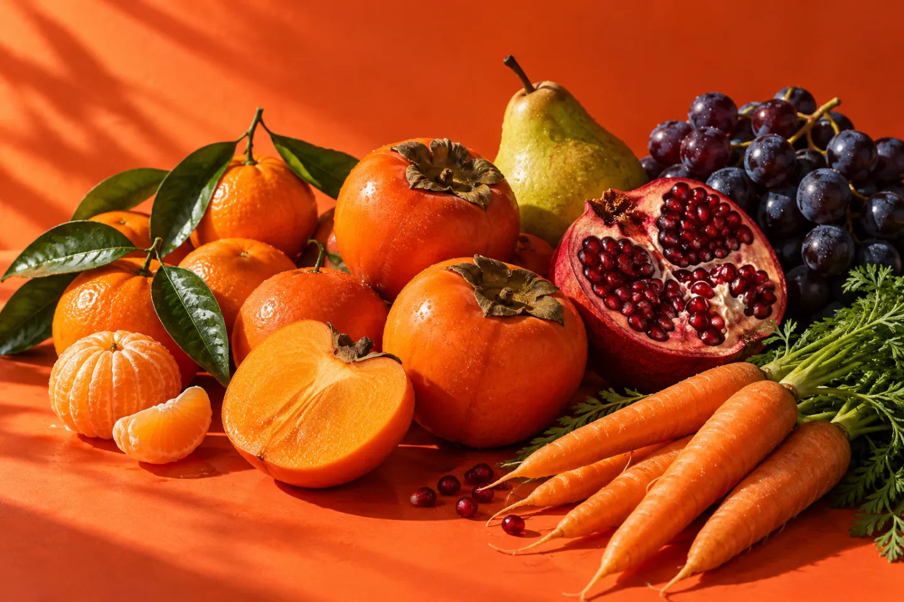

Хурма
Фрукты
Фрукты, ягоды и фреши в Краснодаре.
Для тех, кто любит выбирать вкусное.

Собрать свой списокЧто-то знакомое. Что-то новое.
Выберите, за чем зайдёте сегодня.
Зайти за соком по дороге. Выбрать фрукты к завтраку. Взять что-нибудь к чаю.
Хороший повод на минуту замедлиться.
Выбрать фрешМагазин, в который можно заглянуть за фруктами, орехами, сухофруктами и стаканом свежего сока.
О нашем магазинеКраснодар, Красная, 176/5
ТК «Центр Города», первый этаж